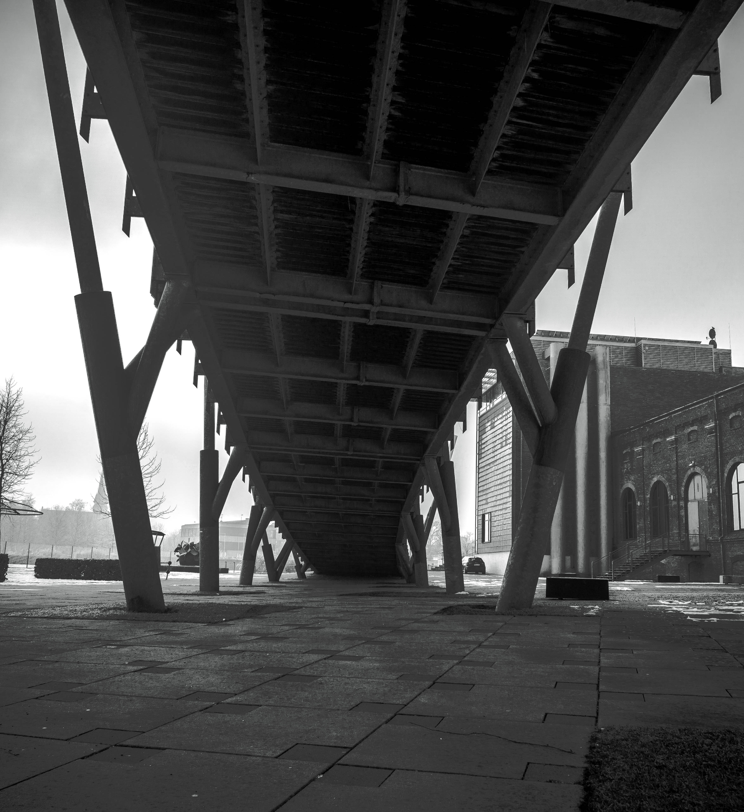
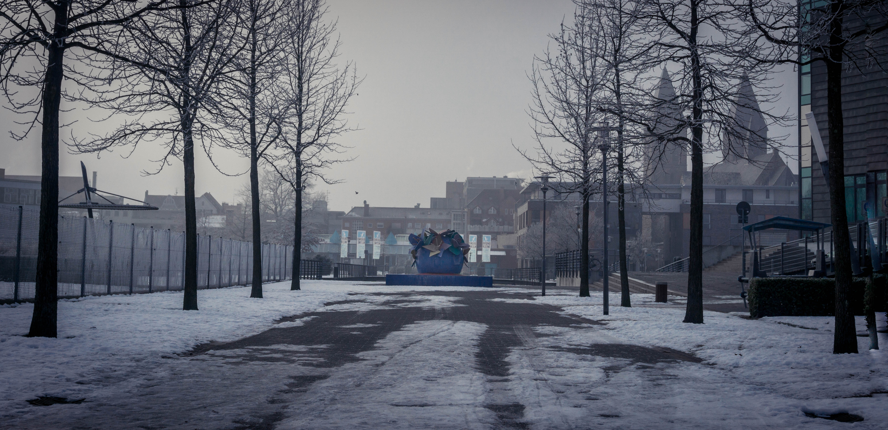
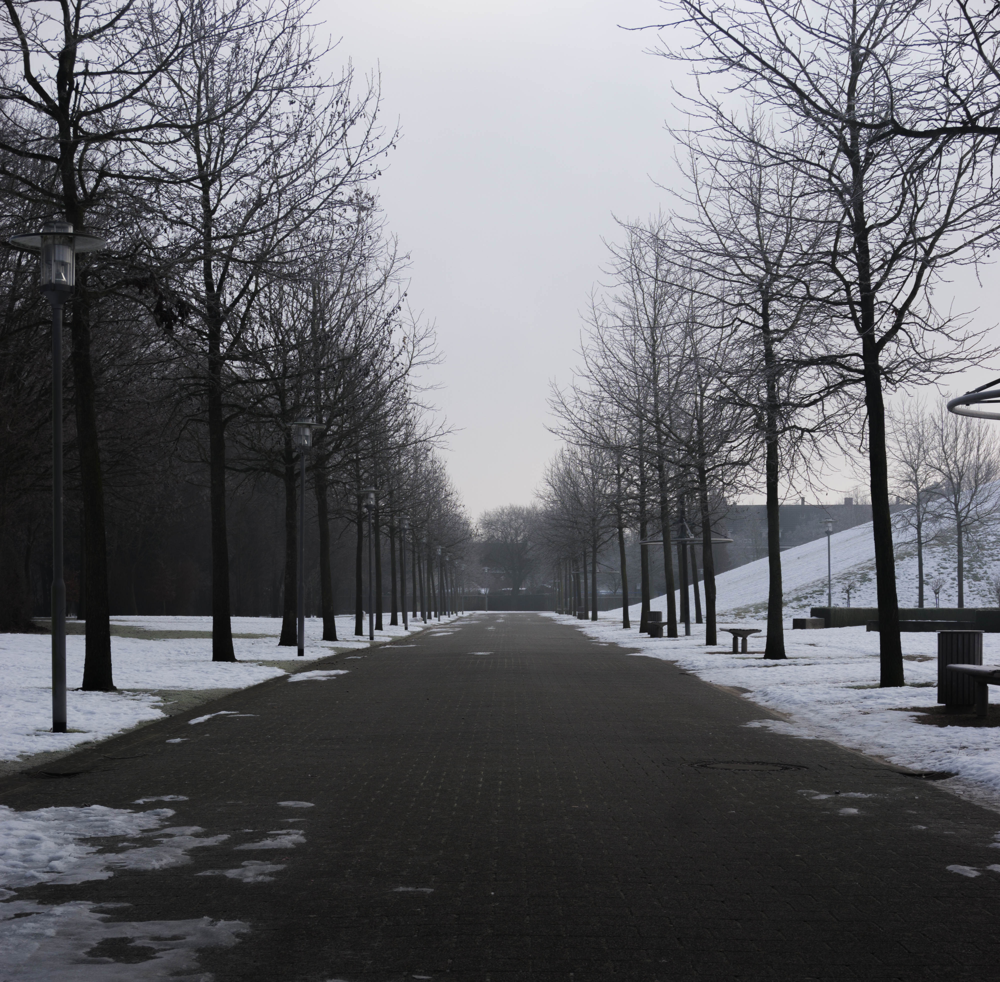
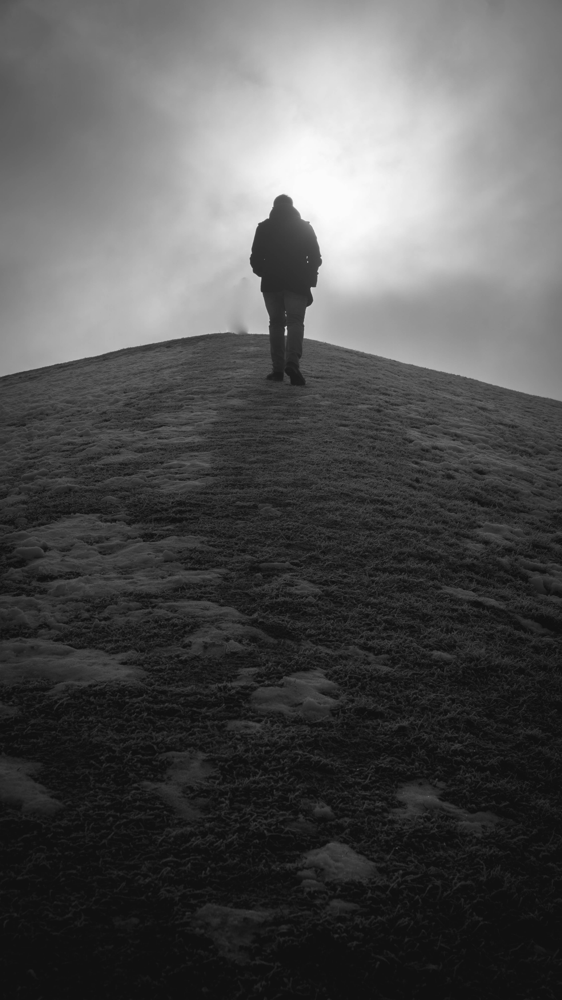
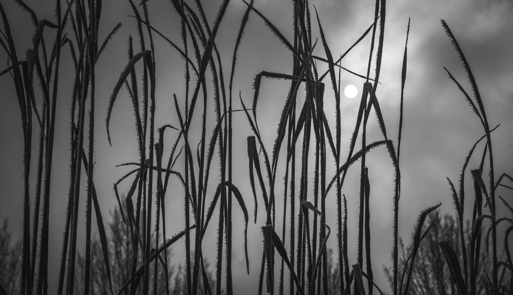
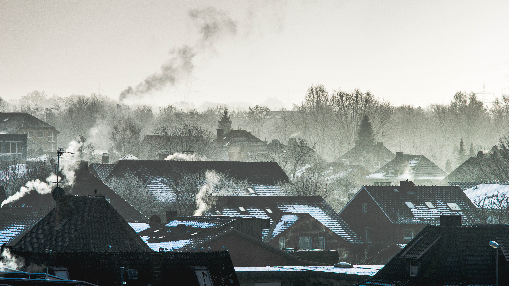

Winter Perspectives – Photo Series
This curated selection of 6 photographs explores solitude, atmosphere, and geometry within urban winter spaces. The project was created as a personal creative exercise focused on mood, visual rhythm, and restraint.
Tools: Affinity Photo, Adobe Lightroom
Focus:
The series aims to capture moments of stillness and structural contrast, highlighting how minimal elements can evoke strong emotion through framing and light.
Outcome:
This project deepened my understanding of composition, tonal control, and editing choices in a photographic context.





